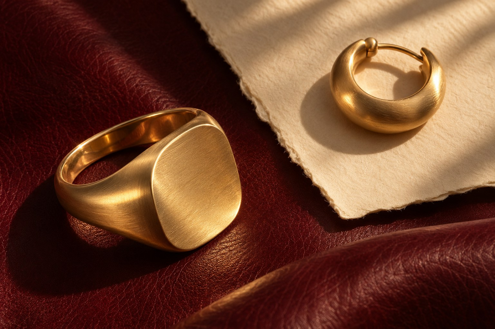

Self-Directed Concept Case Study · Brand Identity · Web · Social
Velmora — Fine Jewellery
A brand identity, website direction and social system for a fictional 18K solid gold jewellery house, designed around one idea: a piece of jewellery is something you own, not just something you wear.

Overview & my role
Velmora is a self-directed concept built in response to a real-world type of brief: a new 18K solid gold brand selling online that wants women to see jewellery as part of their precious metals portfolio.
The name, products and figures are fictional. The challenge is real: how do you make gold feel desirable and make its value easy to understand, without the brand turning into a bullion dealer or a fast-fashion label? I developed the strategy, identity, type and colour system, website direction and social templates as one connected system.
- Define a positioning that sits between heirloom jewellery and a trusted store of value.
- Design a wordmark, a hallmark-inspired logomark and a monogram.
- Build a colour palette and a three-family type system with clear roles.
- Design a homepage and a product page that show purity, weight and price in plain language.
- Create social media guidelines and three reusable post templates.
Design brief
- Product. 18K solid gold jewellery, sold online first to regional and international customers.
- Purpose. Help women build their own precious metals portfolio, at a fair price, through pieces they love to wear.
- Deliverables. Logo and wordmark, typography and colour palette, website design, social media guidelines and templates.
- Feel. Mature, editorial and a little arty, like a museum catalogue meeting a fashion magazine. Warm, confident and trustworthy.
- Avoid. Anything young, bright, minimalist or cheap.
Design challenge: Give the brand the warmth and taste of a fashion house while making it as transparent as a financial product. Customers should feel the piece is beautiful and also know exactly what they are buying.
Concept: the collector's catalogue
Museums describe each object with care: a plate number, a material, a weight, a date. Velmora borrows that habit. Every piece is presented like an entry in a collection catalogue, with fashion-magazine photography around it. The catalogue details build trust, and the editorial images supply the desire.
A. Proof up front
The 750 hallmark, the international stamp for 18K gold, becomes part of the logo. Purity, weight and fine gold content appear on every product, not hidden in a details tab.
B. Warm, not cold
Oxblood and ivory replace the black-and-white of minimalist luxury. They read as leather, paper and velvet-lined boxes, materials people keep for a lifetime.
C. Every piece has a number
Pieces are named and numbered like plates in a catalogue ("Signet No. 03"). That supports collecting over time and gives social posts a natural series structure.
Logo & wordmark
The wordmark is set in a classical serif with wide letter-spacing, so it reads as calm and established rather than trendy. A hallmark-shaped logomark pairs the italic V with "750", and an engraved monogram works at small sizes: on clasps, box lids and social avatars.
Colour palette
A warm, deep palette taken from leather, archival paper and aged gold. Gold appears as an accent only, so the jewellery itself is always the brightest thing on the page.
Oxblood
Ivory
Ink
Bone
Stone
Aged Gold
Recommended proportions: ivory 40 · oxblood 30 · ink 15 · bone 10 · gold 5
Typography
Three type families, each with one job. The serif supplies the fashion-magazine voice, the sans keeps long text easy to read, and a monospaced face handles the catalogue details: plate numbers, weights and prices.
Display · headlines
Worth keeping.
Cormorant Garamond · Italic & Medium
Body · reading
Each piece is cast in solid 18K gold and stamped 750, so its value is never in question.
Barlow · Light & Regular
Catalogue · data
PLATE 03
18K / 750 · 9.4 g
FINE GOLD 7.05 g
JetBrains Mono · Regular
Website design
The homepage opens like a magazine spread: one large image, one confident line, and three short proofs of trust underneath. The product page works like a catalogue entry. A specification table and an open price breakdown show how much of the price is gold and how much is craftsmanship, which is the brand promise put into practice.
- Collection
- The Gold
- Journal
- Care
COLLECTION I · PLATES 01–12
Jewellery
you keep.
Gold you own.
Sculptural pieces in solid 18K gold, priced openly by weight so every piece adds to what you own.
View the collectionPLATE 03 · COLLECTION I
Signet No. 03Brushed cushion signet
| Metal | Solid 18K yellow gold |
|---|---|
| Hallmark | 750 |
| Weight | 9.4 g |
| Fine gold content | 7.05 g |
| Face | 14 × 12 mm · satin finish |
How this price is made
Concept screens. Product names, weights and prices are illustrative.
Social media guidelines & templates
Three repeatable formats give the feed a catalogue rhythm: a reveal, a close-up and a knowledge post. They use the same grid, captions and type roles as the website, so the brand looks the same wherever someone meets it.
- Photography. Warm, directional light on natural materials like leather, paper, linen and stone. No pure white backgrounds, no props that compete with the piece.
- Captions. Short and assured. Lead with the object, then give the facts: plate number, purity, weight.
- Colour. Oxblood or ivory as the base of each post; gold only for small type or rules.
- Rhythm. Reveal → detail → knowledge, repeated, so the grid reads as a curated series.
- Tone. Confident, never pushy. No countdowns, flash-sale language or exclamation marks.
What this case demonstrates
A. Turning a business idea into a visual system
The "asset, not accessory" positioning shapes concrete design decisions: the hallmark logomark, the catalogue type role and the open price breakdown.
B. Luxury that earns trust
An editorial, arty tone and clear, verifiable information work together, so the brand feels premium without feeling distant.
C. One system across every touchpoint
Logo, palette, type, website and social templates share the same rules, so a developer or social media manager can extend them consistently.
Launching a jewellery or luxury brand?
Identity, typography and colour, a website direction and social templates, designed as one system and scoped to your budget and timeline from the first conversation.